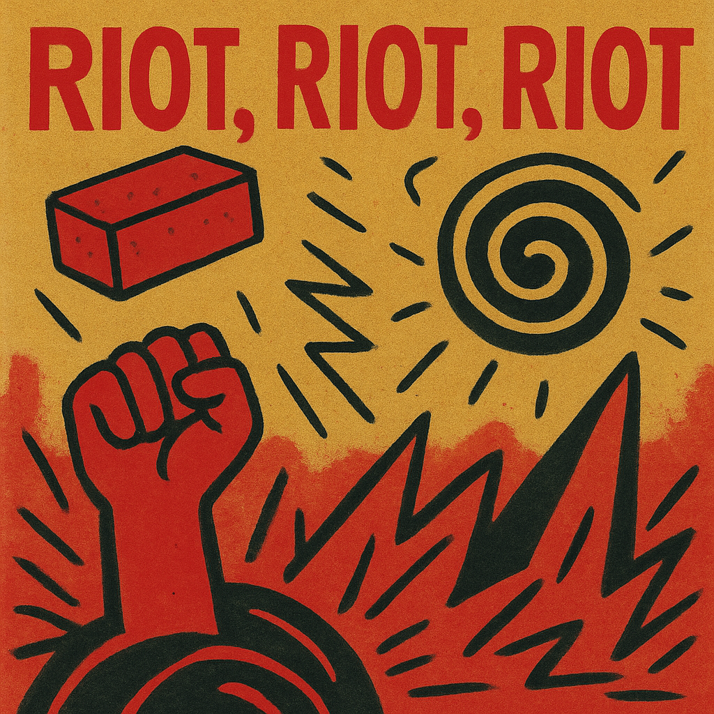

DISCOGRAPHY
ALBUMS
Doorbell
Obnubilatio

Riot, Riot, Riot
SONGS
- No shirt, no shoes, no problem
- Ode to the future
- Pan America
- Amsterdam: A Space odyssey
- Funky Monarchy
- The Sheep
- Jesus on Wheels
- Parsley Conspiracy
- Vietnanny
- Rotten Appels
- Get your act together
- Unravel the riot
- Gasoline
FEATURED TRACKS
Get your act together
[Verse 1]
You floated through life like steam from a kettle
Promising shelter with hands full of holes
You never arrived when it mattered
But left your coat on a chair like that meant something
[Verse 2]
I watched you chase shadows under bar signs
Telling strangers stories you never told me
I waited by the radiator for warmth that didn’t come
Tried to believe the silence was you changing
[Pre-Chorus]
I learned the names of clouds
Not from books, but from the way you disappeared
Every absence had a shape
And every return, a new kind of emptiness
[Chorus]
Get your act together
Because this isn’t a rehearsal anymore
You missed the storm you created
I stood in it alone with shoes full of skywater
And no one applauded when I didn’t cry
[Bridge]
The house still smells like your smoke
Even after all these years
You called it freedom
But it looked like forgetting
And it sounded like footsteps that never came closer
[Breakdown]
You were the weatherman
You were the forecast
You were the eye
But never the storm
You were the curtain
But never the play
[Final Chorus]
Get your act together
The sky doesn’t wait for apologies
I carry your name like a map with no scale
But I’m not lost anymore
I’ve become the horizon
And you are just the echo
[Outro]
I inherited your silence
But I broke it
I became the wind
And I did not look back!!!
Amsterdam, A space odyssey
[Verse 1]
Neon rivers, bicycles like satellites
Spinning in gravity loops on the canal’s edge
He sold me Saturn in a paper square
Said, “Take this and vanish where clocks can’t follow”
[Verse 2]
My shoes are puddles, my hands are jazz
The cobblestones melt into Morse code
Tourists flicker like static ghosts
And the tram hums in D minor beneath my ribs
[Pre-Chorus]
Eyes wide like cathedral windows
I saw God in a vending machine
She wore sunglasses and gave me directions
To a jazz bar on Jupiter Street
[Chorus]
This is Amsterdam, my mission control
I took off from a coffee shop bathroom
Now I orbit in fractals and Dutch vowels
Weightless with a sugar cube tongue
Floating…
past logic, past law, past my name
[Bridge]
There's a church made of insects
A lover made of clouds
I kissed her and tasted static
She whispered, “You’re not here anymore.”
[Breakdown] (mechanic and tense)
Red light… Blue light…
Heartbeat like techno
Reality’s a vinyl skipping
And I can’t find the needle
[Final Chorus]
Amsterdam, you velvet black hole
You swallowed my gravity
And spit me out a constellation
Laughing in Dutch
With my ego left behind in a gutter full of stardust
[Outro] (half-sung, half-spoken)
I came for escape
Found the infinite
Left my name in a puddle
Signed it with light
And walked into the void
With open eyes.
Gasoline
[Verse 1]
You sit in velvet, spine straight like a guillotine
Clockwork teeth behind your Sunday grin
Statues weep in the corridors you haunt
And the floorboards whisper names you forgot
[Verse 2]
Red tape strangles the daisies outside
While your tie screams in wretched tones
We watched through keyholes, silent as film
You signed our silence into law
[Pre-Chorus]
I learned to speak in static
In the hum between CCTV eyes
You erased the map and called it vision
But the streets remember everything
[Chorus]
Gasoline, gasoline—your crown is soaked in it
Strike the match with a monarch's smile
This isn’t theatre—it’s the last scene
And we’re not clapping
We’re coming down the aisle with fire in our hands
[Bridge]
Curtains twitch in your fortress of flags
You drink power like it’s communion wine
But we baptized ourselves in Molotov truth
And spoke in smoke until the alarms sang
[Breakdown] (spoken, over jagged bassline)
You were the doctrine
The cold clasp of order
You were the drumbeat of Empire
But you never danced
[Final Chorus]
Gasoline, gasoline—we painted the floor in it
Parliament’s a bonfire in waiting
We are not vandals—we are architects
Tearing down with precision
Rebuilding in the ruins of your comfort
[Outro]
We don't want your statue
We don't want your hymn
We want the sky back
And we brought the storm to take it.